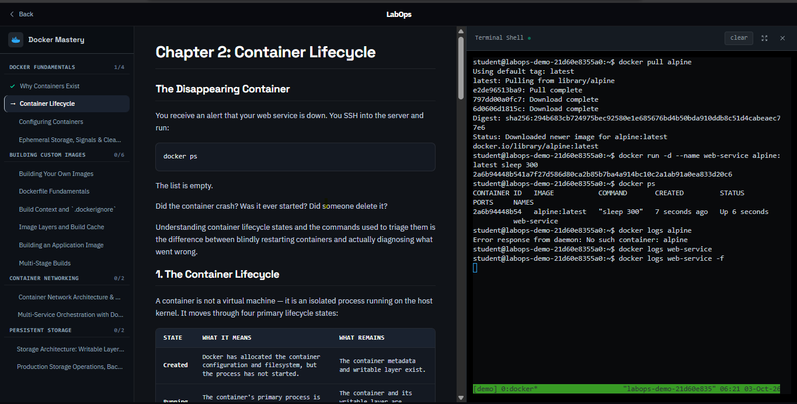
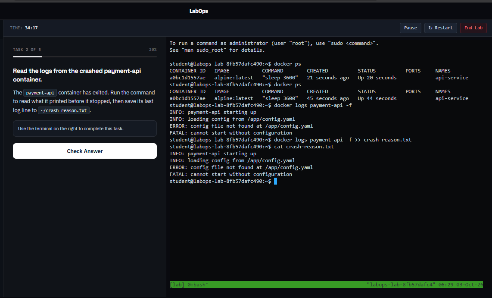

Learn DevOps
by just installing one application
Real Linux Lab Playgrounds running directly in your browser.

Build fundamentals by doing, not watching.
Interactive Side-by-Side Labs
Guided Practical Tasks
Instant Answer Verification
